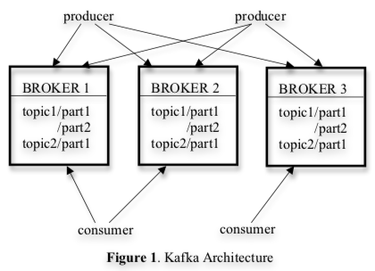
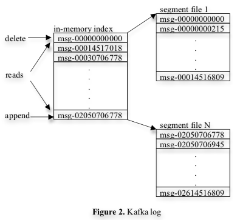
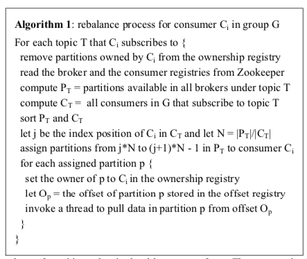

Table of Contents
- Kafka: distributed messaging system
- Intro
- Related work
- Architecture & Design principles
- basic definitions
- example consumer code:
- example producer code:
- architecture:
- efficiency on single partition
- Distributed coordination
- each producer publish msg to
- consumer groups
- goal - divide messages stored in brokers evenly among consumers without coordination overhead
- two decisions:
- employ Zookeeper to help coordination
- when consumer starts, or notified through that watcher, consumer initiates rebalance process
- when multiple consumers in group, each notified of broker/consumer change
- when new consumer group created, no offset available in offset registry
- Delivery guarantees
- in general, at-least-once delivery
- messages from single partition delivered to consumer in order
- no guarantee on ordering from different partitions
- avoid log corruption - store CRC for each message in log
- if broker goes down, message stored on itnoet yet consumed becomes unavailable
- if storage system on broker permanently damaged, unconsumed message lost forever
- Kafka at LinkedIn
- Experimental results
- Conclusion & Future works
Kafka: distributed messaging system
Intro
lots of data generated at company
user activity (clicks, likes, logins, etc.)
operational metrics (call stack, errors, CPU usage…)
it's now part of data pipeline for purposes:
search relevance, recommendations, ad targeting, security
real time usage of log data makes new challenges
data is much larger
enter Kafka: messaging system for log processing
TODO combines traditional log aggregators with messaging systems
distributed and scalable
offers high throughput
API similar to messaging system
lets apps consume logs in real time
open source & used in prod at LinkedIn for >6 months
Related work
already have traditional enterprise messaging systems
not good for log processing:
mismatch in features offered by enterprise systems
often focus on many delivery guarantees
many don't focus on throughput as main design constraint
there are specialised log aggregators already
but most built for consuming log data offline
and expose implementation details to consumer
Architecture & Design principles
basic definitions
topic: stream of messages for particular type
producer publishes messages to a topic
brokers: set of servers that hold published messages
consumer consumes messages in topics by pulling data from brokers
example consumer code:
streams[] = Consumer.createMessageStreams(“topic1”, 1); for (message : streams[0]) { bytes = message.payload(); // do something with the bytes }
messages published are evenly distributed into substreams
each message stream gives iterator ifc over stream of messages being produced
consumer iterates over every message in stream, processes payload
message stream iterator never terminates
blocks until new messages available
example producer code:
producer = new Producer(...); message = new Message(“test message str”.getBytes()); set = new MessageSet(message); producer.send(“topic1”, set);
message ontains payload of bytes (serialization is up to user)
can send set of messages in one publish request
architecture:

cluster consists of multiple brokers
topic divided into multiple partitions
each broker stores one or more of partitions
multiple producers/consumers can pub/get messages at the same time
efficiency on single partition
simple storage:
- each partition of topic <-> logical log
- log is implemented as set of segment files around the same size
- when producer pubs message to partition, broker appends to last segment file
- only flush to disk after:
- msg only exposed to consumers after flushed
- no explicit msg id, addressed by logical offset in log
- consumer consumes from partition sequentially
- consumer acknowledges a message offset => received all msgs prior to that offset in the part
- consumer issuing async pull request to broker to get buffer of data for app
- each pull request has offset of msg at start of consumption and n of bytes to fetch
- broker keeps in memory sorted list of offsets
- broker locates segment file with requested message by searching offset list
- then sends data back to consumer
- consumer receives message and computes offset of next message to consume
- consumer issuing async pull request to broker to get buffer of data for app
- layout of kafka log:

efficient transfer:
avoid explicitly caching msgs in memory
optimize network access for consumers
- multi-subscriber system
- single msg can be consumed multiple times by diff consumers
- typical send bytes local file to remote socket:
- read data from storage media to page cache in OS
- copy data in page cache to app buffer
- copy app buffer to another kernel buffer
- send kernel buffer to socket
- this is 4 data copying, 2 syscalls
- Kafka uses sendfile API on Unix systems - efficient delivery broker to consumer
Distributed coordination
each producer publish msg to
consumer groups
goal - divide messages stored in brokers evenly among consumers without coordination overhead
two decisions:
employ Zookeeper to help coordination
- what is
- detect addition/removal of brokers/consumers
- trigger rebalance process when this happens
- maintain consumption relationship, keep track of consumed offset of each partition
- when broker starts, stores info in broker/consumer registry in Zookeeper
- registry contains broker's hostname, port, set of topics & partitions on it
- consumer groups assocd with ownership and offset registries in Zookeeper
- ownership registry has one path per subbed partition, path val id of consumer currently consuming it
- offset registry stores for each subbed partition the offset of last consumed msg in partition
- when broker starts, stores info in broker/consumer registry in Zookeeper
- if broker fails, all partitions on it removed from broker registry
- each consumer registers Zookeeper watchers on broker and consumer registries
when consumer starts, or notified through that watcher, consumer initiates rebalance process
- determines new subset of partitions to consume from
- algorithm for rebalancing:

- description of algorithm:
By reading the broker and the consumer registry from Zookeeper, the consumer first computes the set (PT) of partitions available for each subscribed topic T and the set (CT) of consumers subscribing to T. It then range-partitions PT into |CT| chunks and deterministically picks one chunk to own. For each partition the consumer picks, it writes itself as the new owner of the partition in the ownership registry. Finally, the consumer begins a thread to pull data from each owned partition, starting from the offset stored in the offset registry. As messages get pulled from a partition, the consumer periodically updates the latest consumed offset in the offset registry
when multiple consumers in group, each notified of broker/consumer change
Delivery guarantees
in general, at-least-once delivery
messages from single partition delivered to consumer in order
no guarantee on ordering from different partitions
avoid log corruption - store CRC for each message in log
if broker goes down, message stored on itnoet yet consumed becomes unavailable
Kafka at LinkedIn
one Kafka cluster with each datacenter where user-facing services run
frontend generates log data, publishes to local Kafka brokers in batches
hardware load-balancer distributes publish requests to set Kafka brokers evenly
deployment diagram: